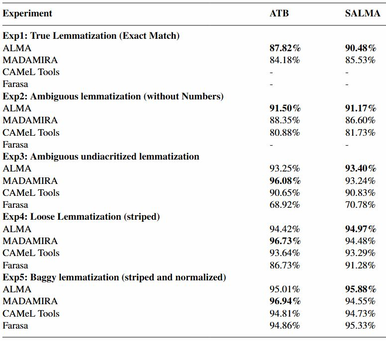
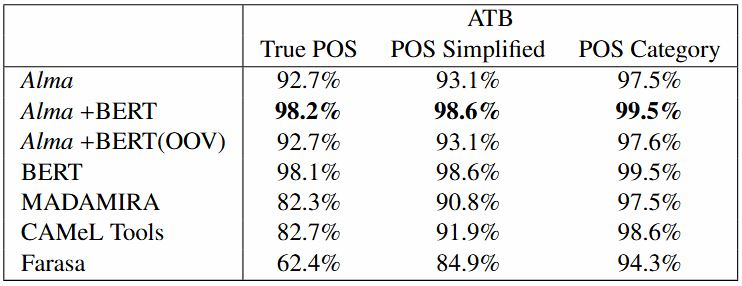
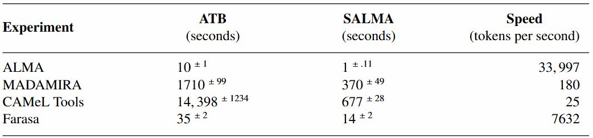

ALMA (ألمى)
Arabic Morphology Tagger
Lemmatizer, POS tagger, and root tagger.
Accuracy: POS (93.8%),
lemmatization (90.48%), and speed (32K tokens/second). Outperformed
all other tools (see
article).
-
Lemmatization BenchMarkingWe used two datasets (Arabic Treebank and SALMA) to evaluate four tools in five lemmatization scenarios, keeping the default settings for all tools. For more details, refer to article [1].POS BenchMarking

We used the ATB dataset to evaluate four tools in three POS tagging scenarios, keeping the default settings for all tools. For more details, refer to article [1].Speed BenchMarking
We evaluated the lemmatization speed of the four tools (default settings) on the same machine (24 CPU, 47G Memory, CentOS, size 1.3T) using the same setup (reading input from a file and writing output to a file). The experiment was repeated six times, excluding the first run to account for the initial memory loading time of some tools. See article [1] for more details.
-
Mustafa Jarrar, Diyam Akra, Tymaa Hammouda: ALMA: Fast Lemmatizer and POS Tagger for Arabic. In Proceedings of the 2024 AI in Computational Linguistics (ACLING 2024), Procedia Computer Science, Dubai. ELSEVIER.
Tymaa Hammouda, Mustafa Jarrar, Mohammed Khalilia: SinaTools: Open Source Toolkit for Arabic Natural Language Understanding. In Proceedings of the 2024 AI in Computational Linguistics (ACLING 2024), Procedia Computer Science, Dubai. ELSEVIER.